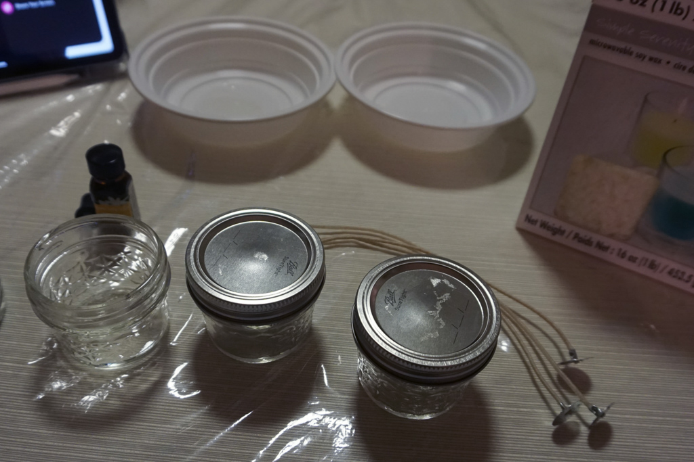
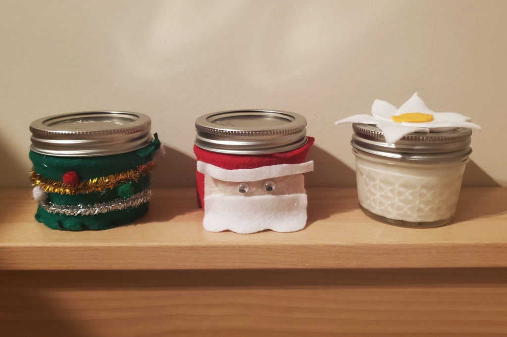
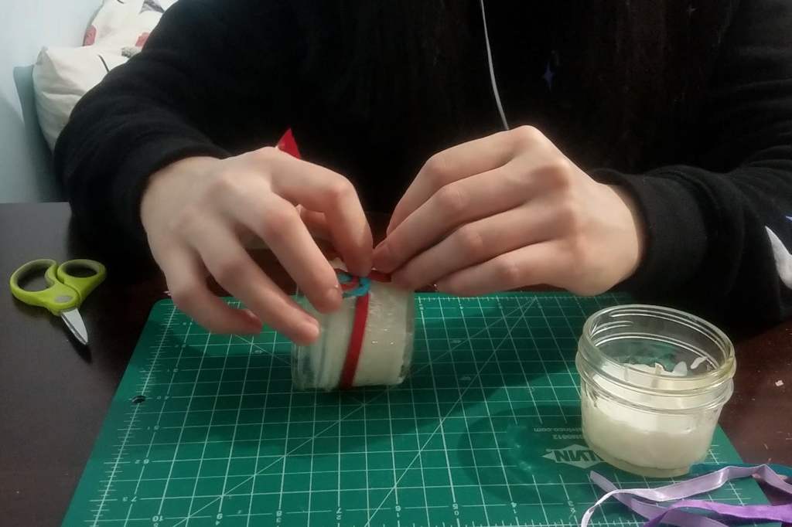
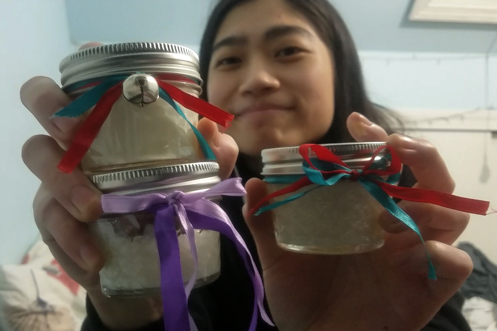

7 Days of Christmas - DIY Candles
Dec 22 - Written by Bonnie and Emily
Welcome to Day 4 of our Seven Days of Christmas series!! Hopefully you were able to make some “bomb” hot chocolate bombs yesterday with us.
We’re back again with another DIY video and this time it's not only for holiday decorating but also for creating the best holiday smelling home for the holidays-- candles! Although candles are supposedly relatively easy to make, our lack of following instructions definitely didn’t make it as simple as we had presumed. On top of that, we couldn’t just leave our candles plain so we went ahead and decorated them too!
For this DIY craft, we opted to create mini candles to make more than one scent. We picked out a holiday scent, Christmas tree, and a daily scent, Jasmine to add a little more variety to our candles! The materials were relatively simple, some soy wax, candle wicks, and some cute mini mason jars. Oh and whatever scent you might want to add to your candle!
At first we were committed to following the instructions on the candle box and melted the wax accordingly before mixing in our fragrances, except we never bothered to measure out our wax evenly and ended up with a cute russian doll candle collection! Along with skipping the steps to let out any air bubbles in our candles, you could say we basically made up our own process. But don’t fret it always works out somehow!
Nonetheless our candles still came out smelling great and all filled up to the top of our mason jars. Since we didn’t dye our candle into different colors, we decided to decorate our candles! Bonnie was feeling a bit crafty and sewed some candle sleeves together with the remaining felt she had to make a mini Christmas tree and Santa Claus sleeve for her two Christmas Tree scented candles.
Emily on the other hand opted for something simpler yet still cute. She gathered some ribbon and tied varying colors to the top of each mason jar. She switched things up by changing up how the ribbon is tied together at the ends and by also adding a little jingle bell to one of the jars.
No matter how you choose to decorate your candles, they will surely make for a great activity and gift. If you’re in need of a last minute Christmas gift for a friend or family member, definitely give these fun and easy candles a try to help add a festive touch to their homes!